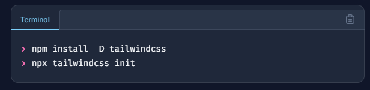
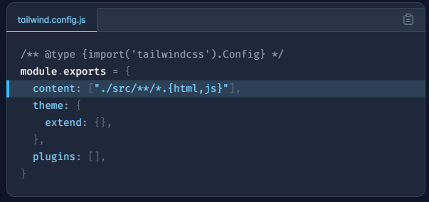
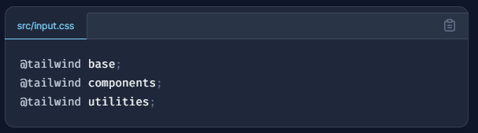
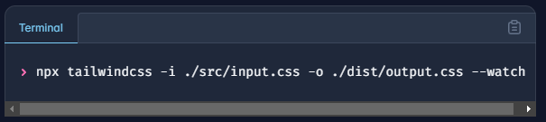
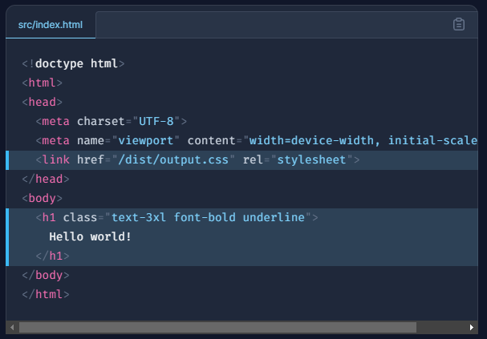

Next I started working on the contents of the page mostly text explaining each step/planning for it
Next I started working on the contents of the page mostly text explaining each step/planning for itThen I visited the tailwind documents website to learn and apply styling to my page
you can also install tailwind css using these simple steps:
in the treminal Install tailwindcss via npm, and create your tailwind.config.js file.  Add the paths to all of your template files in your tailwind.config.js file.  Add the @tailwind directives for each of Tailwind’s layers to your main CSS file.  Run the CLI tool to scan your template files for classes and build your CSS.  Add your compiled CSS file to the and start using Tailwind’s utility classes to style your content.  and started applying styling to my webpage
The main difficulties encountered were really just choosing the framework and website to host my webpage
which was solved by github, being an already trusted site by me and
for picking the framework, I trusted fireship(a youtube channel)
specifically these two videos tailwind in 100 seconds and tailwind CSS is the worst.. followed by a little bit more research online.